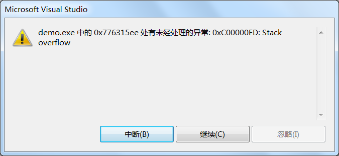

大白话聊栈溢出（stack overflow）
大家肯定都知道 Stack Overflow 这个网站吧，它是全球最大的技术问答网站，国内很多程序员也在使用。
这里的栈（Stack），并不是数据结构中的栈，而是程序内存中的一个分段，或者说一个分区。
一个程序可以使用很多内存，不同的内存有不同的作用，为了方便管理，操作系统会对程序的内存空间进行分区，把具有相同作用的内存都归纳到一个区域之中。

图片里的“内核空间”是被操作系统占用的，我们没法直接干预；图片里的“保留区域”也不用来存储数据，只用作一些特殊目的，比如，你可以让空指针指向这里。
除了这两个区域，剩下的那些内存才是被我们自己编写的程序所占用的，也就是图中的①和②两个部分，这其中：
在第①部分中，有一个分段叫做栈（Stack），它只在一种情况下才会被用到，就是发生函数调用。
函数被调用的时候，有很多数据需要暂时压入栈中，也就是存储到栈中，包括：
局部数据是我们在函数内部定义的，它们的作用域也仅限于函数内部，只有等到函数被真正调用时，才会被实际创建出来，也就是分配好内存。
至于隐藏数据，是为了实现函数的调用过程，并保证在函数退出时能够恢复到调用之前的场景，而不得不额外增加的一些冗余数据。这些隐藏数据都由编译器分配，程序员自己是没法干预的。
以上提到的所有这些被压入栈中的数据，通常被称为栈帧（Stack Frame）或者函数活动记录（Activate Record）。
函数每调用一次，就会生成一个栈帧，这个过程被称为函数入栈；当函数调用结束时，栈帧就会被销毁，腾出内存来供其它函数使用，这个过程被称为函数出栈。
调用开始时，先调用的函数先入栈，后调用的函数后入栈；调用结束时，后调用的函数先出栈，先调用的函数后出栈。你看，这和数据结构中栈的进出方式是一样的，所以这段内存区域才被叫做栈。
这里有一个常识，就是一个线程拥有一个栈，栈中的数据是被当前线程独占的，其它线程不能访问。
为了保证可以同时运行多个线程，比如几十个，或者成百上千个，编译器不会给单一线程分配太多的栈内存，一般也就 1MB~8MB。
栈内存的大小在编译时就已经确定了，程序在运行期间不能改变，所以如果程序使用的栈内存超出最大值，就会发生栈溢出（Stack Overflow）错误。
这是发生栈溢出错误的典型场景。
我们不妨来看一段代码：
这里我们定义了一个大规模数组，它需要占用 2MB 内存，而 VS 的栈内存默认只有 1MB，所以就发生了栈溢出错误。
栈溢出是一种致命错误，发生栈溢出错误以后，我们的程序就没法再继续运行了，你只能关闭它，没有其它的挽救措施。
官网网址是：https://stackoverflow.com/
Stack Overflow 这个名字，其实是一种程序的运行时（runtime）错误，中文翻译过来叫做“栈溢出”。这里的栈（Stack），并不是数据结构中的栈，而是程序内存中的一个分段，或者说一个分区。
一个程序可以使用很多内存，不同的内存有不同的作用，为了方便管理，操作系统会对程序的内存空间进行分区，把具有相同作用的内存都归纳到一个区域之中。
严格来说，这里的内存空间应该叫做“虚拟地址空间”，或者“虚拟内存空间”，不过为了照顾大部分初学者，站长就不照本宣科了。
例如，在经典的 32 位环境下，程序可以使用的内存为 4GB，Linux 会按照下图进行分区。图片里的“内核空间”是被操作系统占用的，我们没法直接干预；图片里的“保留区域”也不用来存储数据，只用作一些特殊目的，比如，你可以让空指针指向这里。
除了这两个区域，剩下的那些内存才是被我们自己编写的程序所占用的，也就是图中的①和②两个部分，这其中：
- ② 在程序运行期间会一直存在，直到程序销毁才能被释放；
- ① 在程序运行期间会不断变化，它被不断地分配和释放。
在第①部分中，有一个分段叫做栈（Stack），它只在一种情况下才会被用到，就是发生函数调用。
函数被调用的时候，有很多数据需要暂时压入栈中，也就是存储到栈中，包括：
- 我们在代码中定义的数据，比如实参、局部变量、局部数组、局部对象、返回值等，我们可以称它们为局部数据；
- 还有我们在代码中看不到的数据，比如函数的返回地址、一系列寄存器的值等，这些都是函数调用所需要的隐藏数据。
局部数据是我们在函数内部定义的，它们的作用域也仅限于函数内部，只有等到函数被真正调用时，才会被实际创建出来，也就是分配好内存。
至于隐藏数据，是为了实现函数的调用过程，并保证在函数退出时能够恢复到调用之前的场景，而不得不额外增加的一些冗余数据。这些隐藏数据都由编译器分配，程序员自己是没法干预的。
以上提到的所有这些被压入栈中的数据，通常被称为栈帧（Stack Frame）或者函数活动记录（Activate Record）。
函数每调用一次，就会生成一个栈帧，这个过程被称为函数入栈；当函数调用结束时，栈帧就会被销毁，腾出内存来供其它函数使用，这个过程被称为函数出栈。
调用开始时，先调用的函数先入栈，后调用的函数后入栈；调用结束时，后调用的函数先出栈，先调用的函数后出栈。你看，这和数据结构中栈的进出方式是一样的，所以这段内存区域才被叫做栈。
这里有一个常识，就是一个线程拥有一个栈，栈中的数据是被当前线程独占的，其它线程不能访问。
为了保证可以同时运行多个线程，比如几十个，或者成百上千个，编译器不会给单一线程分配太多的栈内存，一般也就 1MB~8MB。
栈内存的大小在编译时就已经确定了，程序在运行期间不能改变，所以如果程序使用的栈内存超出最大值，就会发生栈溢出（Stack Overflow）错误。
栈内存的大小和编译器有关，编译器会为栈内存指定一个最大值，在 VC/VS 下，默认是 1M，在 C-Free 下，默认是 2M，在 Linux GCC 下，默认是 8M。当然，我们也可以通过参数来修改栈内存的大小。
一般情况下，栈内存都是够用的，但是如果遇到以下两种情况，栈内存就会捉襟见肘：- 在函数内部定义了大规模的数据，比如定义了一个很大的数组；
- 函数调用层次太深，导致栈帧持续堆积，比如函数的嵌套调用。
这是发生栈溢出错误的典型场景。
我们不妨来看一段代码：
int main(){
char str[1024*1024*2] = {0};
return 0;
}
我们使用 VS2010 的 Debug 模式进行编译，然后运行，就会出现如下错误：

这里我们定义了一个大规模数组，它需要占用 2MB 内存，而 VS 的栈内存默认只有 1MB，所以就发生了栈溢出错误。
栈溢出是一种致命错误，发生栈溢出错误以后，我们的程序就没法再继续运行了，你只能关闭它，没有其它的挽救措施。
关注公众号「站长严长生」，在手机上阅读所有教程，随时随地都能学习。内含一款搜索神器，免费下载全网书籍和视频。

微信扫码关注公众号